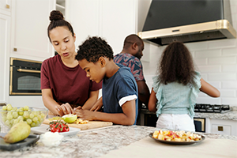

Let’s Talk! – Adverbs of Frequency in Daily Routines
Uso en contextos cotidianos
Uso en contextos cotidianos
Introducción
¿Cuántas veces al día te cepillas los dientes? ¿Con qué frecuencia tu familia comparte una comida juntos? En inglés, los adverbios de frecuencia nos ayudan a hablar de estas acciones de la vida diaria.
Con ellos podemos describir rutinas personales como levantarse temprano, hacer tareas o practicar un deporte, y también hablar de hábitos familiares, como cenar juntos, visitar a los abuelos o salir los fines de semana.
Aprender a usar correctamente always, usually, often, sometimes y never te permitirá expresar tus costumbres de manera clara y natural en inglés.
Ejemplos de rutinas diarias
I always brush my teeth in the morning. 
(Siempre me cepillo los dientes en la mañana).
She usually has breakfast at 7 a.m. (Ella usualmente desayuna a las 7 a.m.).
They often go to school by bus. (Ellos a menudo van a la escuela en bus).
We sometimes play soccer after school. (A veces jugamos fútbol después de la escuela).
He never goes to bed late. (Él nunca se acuesta tarde).
Ejemplos de hábitos personales y familiares
Ejemplos de hábitos personales y familiares
My mom always drinks coffee in the morning. (Mi mamá siempre toma café en la mañana).
We usually eat lunch together. (Nosotros usualmente almorzamos juntos).
My brother often plays video games in the evening. (Mi hermano a menudo juega videojuegos en la tarde).
We sometimes visit our grandparents on weekends. (Nosotros a veces visitamos a nuestros abuelos los fines de semana).
My family never eats fast food. (Mi familia nunca come comida rápida).